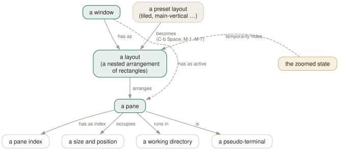

Day 03
Panes and layouts
Splitting, zooming, and the layout engine underneath.
By the end of today you can
- split, navigate, resize and close panes without looking anything up
- use zoom as the answer to “this split is now too small”
- drive the seven preset layouts, and know when to stop fighting them
A pane is a whole terminal
Splitting a window does not divide a terminal in two — it creates a second, complete pseudo-terminal with its own shell, its own process group, its own $TMUX_PANE, and its own scrollback. That is why a pane can be moved to another window, broken out into its own window, or joined into a different one entirely without anything noticing.
Two splits, and the mnemonic that actually survives contact with real use: the % glyph has a stroke running top to bottom, and gives you a top-to-bottom border; " sits high on the line like a divider, and gives you a horizontal one. Do not try to remember which of them is “horizontal”, because tmux and your intuition disagree about that word.
C-b% — left and right
┌────────────┬────────────┐
│ │ │
│ pane 0 │ pane 1 │
│ │ │
└────────────┴────────────┘
C-b" — top and bottom
┌─────────────────────────┐
│ pane 0 │
├─────────────────────────┤
│ pane 1 │
└─────────────────────────┘

select-layout -o can undo them and why a layout can be saved as a string and replayed. Zoom is the exception: it hides the layout for a moment without changing it.Getting around, and getting out of the way
Arrow keys after the prefix move geometrically: C-bLeft selects the pane to the left of the current one, whatever its index. C-bo cycles in creation order, and C-b; jumps back to the pane you were in before — the pane-level twin of yesterday's C-bl.
C-bq briefly paints a large number over each pane. While those numbers are on screen, pressing a digit jumps to that pane. It is the fastest way to reach pane 4 of six, and it doubles as a way to remind yourself what -t 2 will mean in a command.
Resizing, and the repeat trick
C-bC-Left and friends resize by one cell, C-bM-Left by five. Both are bound with -r, which means that after the first one you can keep tapping the arrow without pressing the prefix again — tmux stays in the prefix table for repeat-time milliseconds (500 by default) after each repeatable key.
$ tmux resize-pane -x 100 # exactly 100 columns
$ tmux resize-pane -y 30% # 30% of the window height
$ tmux resize-pane -D 5 # five rows shorter
$ tmux resize-pane -Z # what C-b z does
If the mouse is on (Day 5), dragging a border resizes too — that is a MouseDrag1Border binding running resize-pane -M, not a special case in the code.
The seven layouts
tmux ships seven preset arrangements. C-bSpace cycles through them; C-bM-1 through C-bM-7 pick one directly. The bindings do not run in the order the man page lists the layouts in, so here is what your keyboard actually does:
M-1 even-horizontal M-5 tiled
M-2 even-vertical M-6 main-horizontal-mirrored
M-3 main-horizontal M-7 main-vertical-mirrored
M-4 main-vertical
even-horizontal main-vertical tiled
┌───┬───┬───┐ ┌───────┬─────┐ ┌─────┬─────┐
│ │ │ │ │ │ │ │ │ │
│ │ │ │ │ main ├─────┤ ├─────┼─────┤
│ │ │ │ │ │ │ │ │ │
└───┴───┴───┘ └───────┴─────┘ └─────┴─────┘
The two main-* layouts are the useful ones: a big pane for the work and a column or row of small ones for everything else. Their proportions come from main-pane-width and main-pane-height, both of which take a percentage:
$ tmux set -w main-pane-width 62%
$ tmux select-layout main-vertical
Rearranging and closing
C-b{ and C-b} swap the current pane with its neighbour by index, which is how you promote a pane into the “main” slot of a layout. C-bC-o rotates all of them one step; C-bM-o rotates the other way.
Panes close when their shell exits, or with C-bx (which asks). kill-pane -a keeps only the current one — a good panic button after an experiment gets out of hand. When the last pane in a window goes, so does the window.
One thing almost nobody knows
Recent tmux has floating panes: C-b* opens a pane that hovers over the window rather than taking space from the layout. It is the same object as any other pane — same keys, same commands — but it does not disturb the arrangement underneath. For a quick man lookup or a throwaway command it beats splitting and then un-splitting.
Day 13 builds the more configurable version of the same idea with display-popup, which can run a command in a bordered box and vanish when it exits.
New vocabulary
Keys
| Key | Does |
|---|---|
| C-b% | Split left/right. The |-shaped key gives you a |-shaped border. |
| C-b" | Split top/bottom. |
| C-bLeft | Move to the pane to the left (likewise Right, Up, Down). |
| C-bo | Next pane in creation order. |
| C-b; | The previously active pane — the C-bl of panes. |
| C-bq | Flash the pane numbers; press a digit while they show to jump there. |
| C-bz | Zoom: this pane fills the window. Press again to restore. |
| C-bx | Kill this pane, after a confirmation. |
| C-bSpace | Cycle to the next preset layout. |
| C-bM-1 | even-horizontal — side by side in a row. |
| C-bM-2 | even-vertical — stacked in a column. |
| C-bM-3 | main-horizontal — one big pane on top. |
| C-bM-4 | main-vertical — one big pane on the left. |
| C-bM-5 | tiled — a grid. |
| C-bE | Spread the current pane and its neighbours out evenly. |
| C-bC-Left | Resize by one cell (hold to repeat). M-Left does five. |
| C-b{ | Swap this pane with the previous one; C-b} with the next. |
| C-bC-o | Rotate every pane through the layout; C-bM-o rotates back. |
| C-b* | Open a floating pane over the window — hovers above the layout. |
Commands
| Command | Does |
|---|---|
split-window -h | Split left/right. Alias splitw. |
split-window -v | Split top/bottom. The default if neither is given. |
split-window -c ~/src | Start the new pane in that directory. |
split-window -l 30% | Give the new pane 30% of the space (-l 20 for cells). |
split-window -b | Put the new pane before — above or to the left of — the old one. |
split-window -f -h | Split the full window height, not just the current pane. |
select-pane -L | Move to the pane on the left (-R -U -D likewise). |
select-pane -t 2 | Move to pane 2 of this window. |
last-pane | Back to the previously active pane. |
resize-pane -Z | Toggle zoom. |
resize-pane -x 100 -y 30 | Resize to an absolute size, cells or %. |
select-layout tiled | Apply a named layout. |
select-layout -E | Spread evenly (what C-bE runs). |
select-layout -o | Undo the most recent layout change. |
list-panes | List panes with index, size and command. Alias lsp. |
kill-pane -a | Kill every pane except this one. |
swap-pane -D | Swap with the next pane, keeping focus behaviour sane. |
Options
| Option | Does |
|---|---|
main-pane-width | Width of the big pane in the main-vertical layouts. Accepts %. |
main-pane-height | Height of the big pane in the main-horizontal layouts. |
tiled-layout-max-columns | Cap the columns in the tiled layout; 0 means no cap. |
Drillsdo these in a real terminal, today
Self-check
Answer out loud first, then unfold.
Why does C-b% make a left/right split when its command is split-window -h, and h usually means horizontal?
Because the flag names the direction of the division in tmux's head, not the shape of the result. Almost everyone reads it the other way round at first.
Ignore the letters and use the shapes of the keys. The % glyph has a stroke running top to bottom, and it gives you a top-to-bottom border; " sits high on the line like a divider, and it gives you a horizontal one. Weak mnemonics — but they are printed on your keyboard, which is more than can be said for -h.
You have four panes; three are tiny. Resize or zoom?
Zoom. C-bz is a temporary, reversible state — the layout is untouched underneath, and the Z flag in the status line reminds you it is on. Resizing bakes a decision into the layout that you then have to undo. Reach for the arrow keys only when the new proportions are ones you want to keep.
What is the practical difference between split-window -h and split-window -fh?
Without -f the new pane takes space from the current pane only, so it inherits that pane's slot in the layout. With -f it spans the full height of the window, cutting across every existing pane. That is how you get a proper sidebar next to a stack of panes rather than a split-of-a-split.
What does layout: bb62,159x48,0,0{79x48,0,0,79x48,80,0} in tmux lsw output mean, and what is it for?
It is the window's layout serialised: a checksum, the window size, and a nested description of every pane's size and offset. You can feed the whole string back to select-layout to restore that arrangement exactly, which is how session-restoring scripts and plugins reproduce a layout they cannot describe with a preset name. Day 11 uses it.
Cheat sheet
C-b % / C-b " # split left-right / top-bottom (look at the key glyph)
C-b arrows # move geometrically; C-b ; = last pane; C-b q = numbers
C-b z # ZOOM. the answer to "this pane is too small"
C-b Space # cycle presets; M-1 even-h M-2 even-v M-3 main-h
# M-4 main-v M-5 tiled
C-b E # spread evenly; select-layout -o undoes a layout change
C-b C-arrow # resize by 1 (repeatable); M-arrow by 5
C-b { } # swap panes; C-b C-o rotate; C-b x kill
Everything through Day 03
Keys
| Key | Does |
|---|---|
| C-bd | Detach this client. The session keeps running. |
| C-b$ | Rename the current session. |
| C-b? | List every key binding. q to leave. |
| C-b: | Open the tmux command prompt. |
| C-bt | Show a clock — a harmless way to prove the prefix works. |
| C-bC-b | Send a literal C-b to the program in the pane. |
| C-bc | Create a window at the lowest free index. |
| C-b, | Rename the current window — and pin the name. |
| C-bn | Next window by index. |
| C-bp | Previous window by index. |
| C-bl | Back to the last window you were in. The one to actually learn. |
| C-b0 | Jump straight to window 0 (likewise 1 … 9). |
| C-b' | Prompt for a window index — for windows above 9. |
| C-bw | Choose a window from an interactive tree with previews. |
| C-b& | Kill the current window, after a confirmation. |
| C-b. | Move the current window to a different index. |
| C-bi | Flash some information about the current window. |
| C-b% | Split left/right. The |-shaped key gives you a |-shaped border. |
| C-b" | Split top/bottom. |
| C-bLeft | Move to the pane to the left (likewise Right, Up, Down). |
| C-bo | Next pane in creation order. |
| C-b; | The previously active pane — the C-bl of panes. |
| C-bq | Flash the pane numbers; press a digit while they show to jump there. |
| C-bz | Zoom: this pane fills the window. Press again to restore. |
| C-bx | Kill this pane, after a confirmation. |
| C-bSpace | Cycle to the next preset layout. |
| C-bM-1 | even-horizontal — side by side in a row. |
| C-bM-2 | even-vertical — stacked in a column. |
| C-bM-3 | main-horizontal — one big pane on top. |
| C-bM-4 | main-vertical — one big pane on the left. |
| C-bM-5 | tiled — a grid. |
| C-bE | Spread the current pane and its neighbours out evenly. |
| C-bC-Left | Resize by one cell (hold to repeat). M-Left does five. |
| C-b{ | Swap this pane with the previous one; C-b} with the next. |
| C-bC-o | Rotate every pane through the layout; C-bM-o rotates back. |
| C-b* | Open a floating pane over the window — hovers above the layout. |
Commands
| Command | Does |
|---|---|
tmux | Start the server if needed and create a session, attached. |
tmux new -s work | Create a session named work. |
tmux new -A -s work | Attach to work, creating it only if absent. |
tmux ls | List sessions on this server. Alias for list-sessions. |
tmux attach -t work | Attach this terminal to work. |
tmux attach -d -t work | Attach, detaching any other client first. |
tmux detach | Detach the current client, from inside or by target. |
tmux rename-session api | Rename the current session. |
tmux kill-session -t work | Destroy a session and everything in it. |
tmux kill-server | Destroy every session. The nuclear option. |
new-window | Create a window. Alias neww. |
new-window -n logs | Create it with a fixed name. |
new-window -c ~/src/api | Create it with that working directory. |
new-window -d | Create it but do not switch to it. |
new-window -a -t 2 | Insert after window 2, shifting the rest along. |
rename-window api | Rename the current window. |
select-window -t :3 | Switch to window 3 of the current session. |
last-window | Switch to the previously current window. |
kill-window -t :logs | Kill a window by name. |
list-windows | List windows in the session. Alias lsw. |
choose-tree -w | The interactive picker behind C-bw. |
split-window -h | Split left/right. Alias splitw. |
split-window -v | Split top/bottom. The default if neither is given. |
split-window -c ~/src | Start the new pane in that directory. |
split-window -l 30% | Give the new pane 30% of the space (-l 20 for cells). |
split-window -b | Put the new pane before — above or to the left of — the old one. |
split-window -f -h | Split the full window height, not just the current pane. |
select-pane -L | Move to the pane on the left (-R -U -D likewise). |
select-pane -t 2 | Move to pane 2 of this window. |
last-pane | Back to the previously active pane. |
resize-pane -Z | Toggle zoom. |
resize-pane -x 100 -y 30 | Resize to an absolute size, cells or %. |
select-layout tiled | Apply a named layout. |
select-layout -E | Spread evenly (what C-bE runs). |
select-layout -o | Undo the most recent layout change. |
list-panes | List panes with index, size and command. Alias lsp. |
kill-pane -a | Kill every pane except this one. |
swap-pane -D | Swap with the next pane, keeping focus behaviour sane. |
Options
| Option | Does |
|---|---|
automatic-rename | Window renames itself after the running command. On by default. |
automatic-rename-format | The format used when it does. Defaults to the pane's command. |
allow-rename | Whether a program in the pane may rename the window by escape sequence. |
main-pane-width | Width of the big pane in the main-vertical layouts. Accepts %. |
main-pane-height | Height of the big pane in the main-horizontal layouts. |
tiled-layout-max-columns | Cap the columns in the tiled layout; 0 means no cap. |